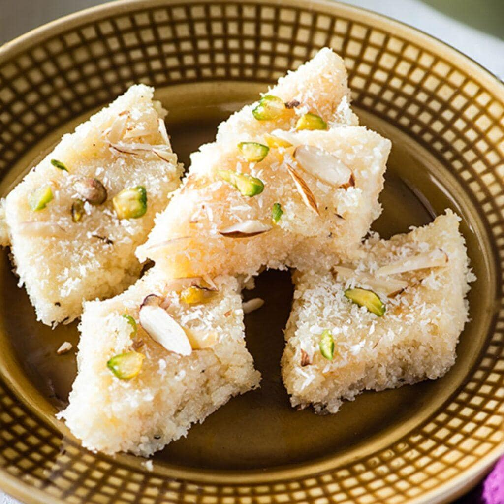

Cocount Burfi Recipe

Description
Coconut Burfi is a simple and delicious Indian sweet made with fresh grated coconut and sugar. You can prepare it quickly with just a few ingredients. It does not need any fancy technique or equipment. Most households make it during festivals like Diwali, Navratri, or Raksha Bandhan. People share it with friends and family to celebrate joy and tradition. The recipe is often passed down from grandmothers to mothers to daughters. Each family in South India has its own slight twist or secret ingredient. This makes every version unique while preserving the traditional essence. The result is always a soft, chewy, and aromatic coconut delight.
Ingredients
- 3 Cups Cocount, grated
- 2 cup sugar
- 1/2 cup milk
- 2 tbsp cream, optional
- 1/2 tsp cardamom powder / elachi powde
- Saffron strand / diced Pistachio (garnish)
Steps
- Take 3 cup freshly grated coconut into large kadai.
- Add 2 cup sugar and ½ cup milk.
- Mix well on medium flame until sugar dissolves completely.
- Keep stirring till the mixture starts to thicken. (takes approx. 10 minutes)
- Add 2 tbsp cream
- Continue to cook until the mixture starts to hold the shape.
- Add ¼ tsp cardamom powder and mix well.
- Transfer the prepared dough into a greased plate lined with baking paper.
- Set well forming a block.
- Allow to set for 10 minute, or till it sets completely yet warm.
- Garnish with Saffron Strands and diced pistachio
- Now unmould and cut into pieces
- Serve coconut burfi / nariyal barfi or store in airtight container for a week in refrigerator.
Home